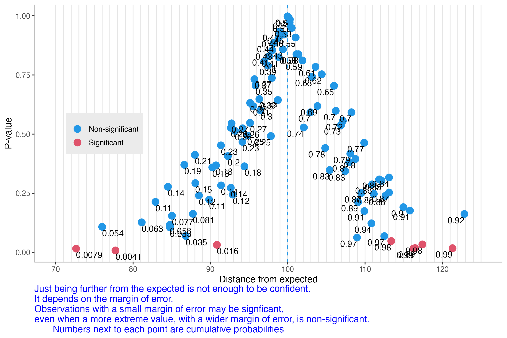
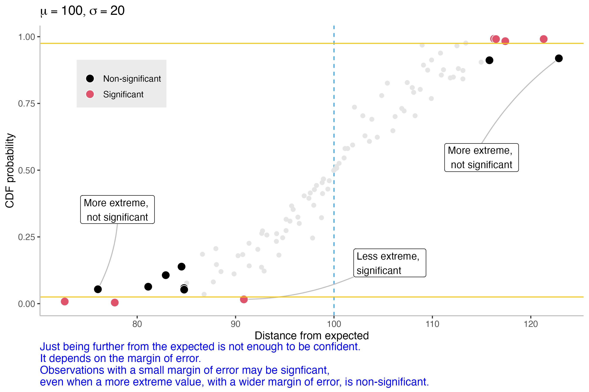

Learning outcomes
- Experiential learning situation
- Further develop awareness of sources of uncertainty
- Understand factors that affect the magnitude of uncertainty
- Learn how uncertainty should be communicated (e.g. use of confidence intervals)
- Begin to engage with underlying statistical concepts such as:
- sample size
- summary statistics (mean, sd)
- probability distributions
- normal distributions
- Understand how to recognize difference between populations
Some possible questions we would like to have answered:
- How big would we like the increase to be before declaring it a success?
- How big was the increase in average sale value?
- A particularly large deviation from expected may be less likely to be within normal range of fluctuations.
- How many sales were made?
- A single large (or small) sale could have an over-sized influence on the average: consider the extreme case where only one sale of £1000 was made.
- How similar in size were the individual sales?
- Did all the sales occur around the same value, or were they spread out across a wide range.
- How typical such a range of values is would be an important consideration.
- How likely is it that we just got lucky this week?
- Again consider a single rare, but high value, sale.
This question should have groups thinking about projections.
They should realize that it is impossible to have any idea about next week based on just this one sample of 5 sales.
- The only thing I can think of here is if we have a prior expectation that this result confirms, then that might give us confidence.
- Any confidence would be unrealistic.
- This would be an example of confirmation bias
- They should realize that no two weeks are the same.
- they should be able to recognize that this is based on only 5 sales
- following weeks could have more or fewer sales
- The value of individual sales is also likely to fluctuate a lot.
Small samples are very likely to be different from each other. This is because it is not too difficult to get 5 observations over £100, and it is equally likely that you could get 5 observation below £100. Also, if even 1 of the observations happens, just by pure chance to be extremely different from the other 4, it will have an outsized effect on the mean. Another factor is that the values could be clusted close together or be spread widely apart.
Larger sample make it more difficult for a single value to have a large influence. As the sample gets larger it gets even more difficult because of regression to the mean. Extreme values become rare compared to more “normal” values.
More observations lead to more consistent estimates. (More accurate and more precise, but that comes next.)
In this scenario the spread could represent different sales vaalues. Relating back to their work it could be the amount of traffic on their website; the number / rate of conversions / customer churn / profits / etc.
Store one can expect the lowest return - on average, but not necessarily always. Because the value of store 2’s stock overlaps with store 1, it is perfectly possible for them to have an unusually poor week, that coincides with an excellent week for store 1.
This range of fluctuations for store 2 is greater than for store 1, so they can expect to have less consitent sales week to week, but they will always consistently make more over a longer period of time.
Store 3 has a very narrow range. This means that no week will ever be particularly surprising for them. It all their items sell at a similar rate, they will always be close to £107.50. Even on the worst weeks, they can expect to be no more than £2.50 away from that average expectation.
Narrower CI are fine if the consequences of being wrong are small. If a precise estimate is mission critical, using a wider CI will give a wider range of possibilities, but will make it less likely to get a nasty surprise.
There is a direct relationship between the sample size, the variance and the confidence interval.
The hint provided for them is a bit loose. If they need some more directon, encourage them to try changing the inputs to cover the following possibilities:
- Large spread; small N
- Large spread; large N
- Small spread; large N
- Small spread; small N
Part 2 — P-value–CDF
P-val plots



Final conclusion code reference
The new populations are sample from a distribution with an integer mean between 96 ans 104. A mean of 100 is not included in the app, so there is guaranteed to be a difference. It is possible for groups to infer the exact integer mean for their own scenario. At the bottom of the app there is a blue expandable container that contains some extra gubbins (the plots there-in might even be interesting to discuss, time permitting). Under the plots there is a four character code, that indicates what the mean of their scenario’s new population is. You can use that code to refer to the table below to see if they understood the concepts, and were able to manipulate the app into revealing a very tight CI covering a single integer value.